Cooper Horne
Self driven - programming oriented CIT student
Hi! My name is Cooper Horne, I'm a computer and information technology student at Lethbridge Polytechnic.
Through everything I've learnt in and out of school, programming and software development have
always stood out to me. I started my programming journy back in 2020; I began with Unity and C#
with the goal of creating games that I could share with friends and the world. Over the following years
I branched out to other languages and frameworks outside of unity and C#. I found my passion holds true
to any side of programming with a creative aspect, or any problem solving elements. This is the place where
all my projects I'm proud of can call home for anyone who's interested to see.
Thanks for taking a look!

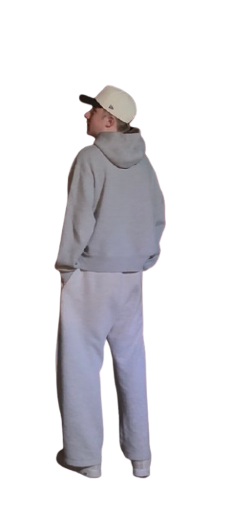

C#
Python
C++
GitHub
HTML
CSS
Unity
SQL
MISSION STATEMENT
GOAL
My goal with programming is to create creative and easy to use software that can impact average peoples lives for the better.
ARTIFICIAL INTELLEGENCE
AI plays a critical role in the furture of programming. I beleive using it effectvly is a skill in of itself, however it is equally if not more important to understand the fundamentals of programming and software development. All of my projects featured here will show if they had AI used in their development. (This site is 100% AI free)
SKILLS
I never want to stop learning and expanding my undserstanding and skillset. Learning is something I've come to enjoy and adding to my collection of skills is something I take pride in. Mastering and adding skills to my arsenal is something I strive for in any position.
R
E
F
E
R
E
N
C
E
S
KALEN HASHTINGS
Town Of Coaldale CAO
Kalen reccommended me for my current position as an accounting assistant at the town of Coaldale.
Trinh Simpson
Know Immersive Tech. Founder
Trihn and I connected at Hack N Seek 2024 and 2025. Both hackathons were hosted at Lethbridge Polytechnic
Stephen Grahm
CIT Program Proffessor
Stephen is the instructor for all programming courses in the CIT program at Lethbridge Polytechnic. I've learnt more from him at my time in CIT than I would have ever expected.
Sheyenne Funk
Coaldale Pool Manager
Sheyenne managed the Coaldale pool the three years I worked there as a lifeguard, before and during college. I owe my work ethic and proffesional habits to here as it was my first consistant job.
Project Managment
Problem Solving
Teamwork
Time Managment
Reliability
Persistance
Motovation

PROJECT DESCRIPTION
Square up is a top down 1v1 tactical shooter built in C# and Unity. The project was built as a team of three people; and I filled the role of our programmer and graphic designer.
The game uses Photon as its networking solution, and is able to be played in web browser or through our downloadable project. Unfourtunatly because of how Photon works
anyone playing on the web based version of the game cannot open web sockets and therefore cannot host games. Other than that both versions are fully functional.
When developing square up we drew heavy inpiration from modern popular tactical shooters such as CSGO, Valorant, and Rainbow 6 Seige. Originally we planned for Square Up to be a 3v3 search and destroy
mode based game. However after play testing and developing the game further we found that our vision for the games movment and combat fit a smaller lobby size. Not wanting to sactrafice
screen space from the limited 2D enviornment we chose to pivot to a 1 on 1 based aproach, keeping the pacing of the game fast, and unpredicable; with ample screen space for the players.
From a game design perspective we wanted to make Square Up an aggressive game. With another key peice of inspiration being Super Animal Royale; a top down battle royale shooter, we looked into the competitive
nature of the game and what made it fun to play aggresivly. We ended up choosing a movment speed boost type of dash that recharges over time but allows you to be extremely unpredictable when wanting to aproach
or disengage from opponents. With the theroy of our game planned out we settled on a first to 7 format and got to work fleshing out our concept.
Square up is a round based game; after both players join the lobby they start the match and spawn in on opposite sides on one of our semetrical maps.
A premade pool of wepons is then picked to spawn on semetrical points of the map to keep the game fair. Players then duke it out until only one player is eliminated,
this repeats on different maps with diffrent wepaon pools until one player wins 7 rounds and is crowned the winner!
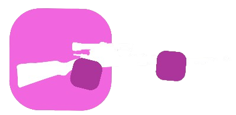
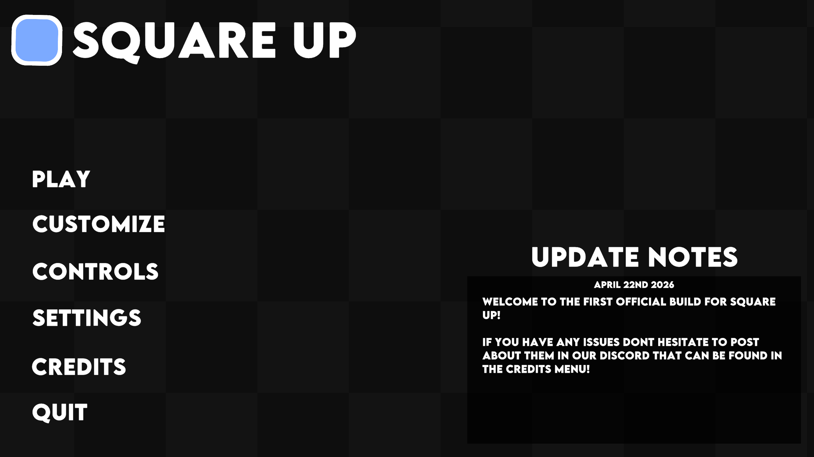
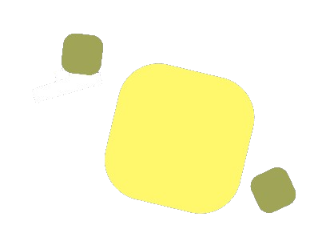
KEY FEATURES

MULTIPLAYER
I learned many things about networking a live game. from sending and receiving packets make things as simple as guns shoot bullets in the same place for both players to ensuring that lobbies can be created, closed, and joined from behind the scenes.

SPACIAL AUDIO
This feature is comonly overlooked but plays a critical role in any tactical shooter. Players rarly think about this feature, but when someone walks, runs, shoots, reloads or anything important that makes a sound; that sound doesn't just play. It plays in the coresponding ear to where the camera is. This adds another layer of depth and stratagy to our game in the form of stealth. Syncing this over the network was interesting to say the least but adds so much the immesion and stratagy of the project.

CUSTOMIZATION
Self expression is the standard in multiplayer games and I wanted to expose myself to the systems that uphold that kind of feature. While our cosmetics only include changable colors for the players skin the system in place would be able to support future ideas such as hats, or weapon skins. The valuable lesson learnt from this is how storing data from the menu can be carried over into a match

THANKS TO OUR AMAZING TEAM
Cooper Horne
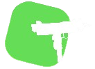
Project Lead, Systems Programmer, UI/UX Design, Graphics and VFX, Publishing/Marketing
Dylan Strong
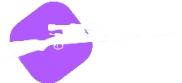
Gameplay and Systems Programmer, Networking Manager, Game design, Map designer
Quinn Deboer
Audio Design, Music Composition, Sound Effect Development
Play Now

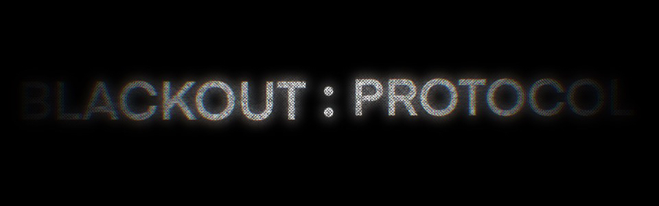
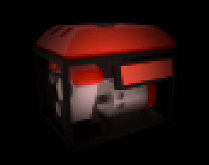
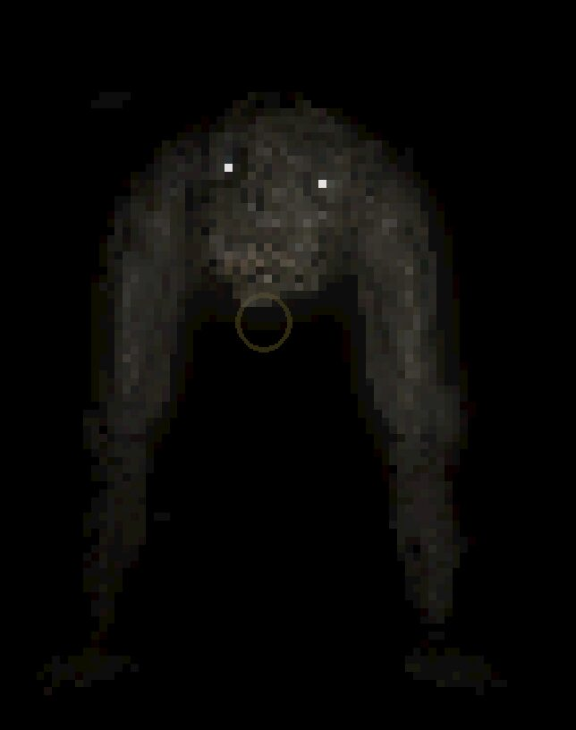
Game Jam Sucsess
Blackout Protocol was developed in 72 hours for the game jam Ludum Dare 57 with the theme: "depths" There were 3262 groups of developers who competed and Blackout protocol placed 111th overall and 20th is the audio catagory; being featured on the front page
Horror Design
This project finds the player on a smill chain suspended repair lift being lowerd deep into dark caverns, tasked with reparing generators at incresingly deep layers of the caves. But be careful, you are not alone...
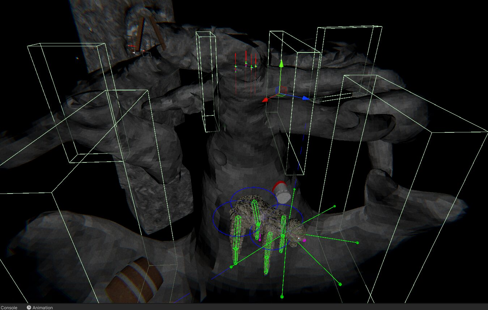
Monster Design
Because this game was built in 72 hours the time crunch was a real challange, however the monster AI we came up with during this event is something that to this day that demontstrates problem solving and was a quick and creative solution to our favourite monster. The AI mixes a pre determined point patrol system, mixed with a player sight, detection and chase state machine. Alongside another script that procedurally animates the mosteres legs, this script does the heavy lifting of just moving the monster around the cave and acting aware.
using UnityEngine;
using System.Collections.Generic;
public enum MonsterState
{
Searching,
Chasing,
ReturningToPatrol
}
public class MonsterAI : MonoBehaviour
{
public MonsterState currentState;
public PatrolPoint[] patrolPoints; // Array of PatrolPoint objects (each one is a GameObject)
public float patrolSpeed = 2f; // Speed while patrolling
public float chaseSpeed = 4f; // Speed while chasing
public float returnToPatrolSpeed = 3f; // Speed while returning to patrol
public float rotationSpeed = 5f; // Speed at which the monster rotates to face direction
public GameObject torsoRef;
[Header("View Bobbing")]
public float bobRate = 2f; // How fast the monster bobs up and down
public float bobHeight = 0.2f; // How high the monster bobs
private float bobTimer = 0f; // Timer for the bobbing effect
private Vector3 originalPosition; // Original position to bob from
private bool isMoving = false; // Track if the monster is moving
private float currentBobOffset = 0f; // Current bobbing offset
[Header("Height Adjustment")]
public float heightAdjustSpeed = 2f; // Speed at which the monster adjusts height
public float height = 0f; // Target height adjustment
private float currentGroundHeight = 0f; // Current ground height below the monster
[Header("Vision System")]
public Transform headPosition; // The "head" GameObject for ray origin
[Tooltip("How far the monster can detect obstacles")]
public float obstacleDetectionRange = 5f; // Shorter range for obstacle detection
[Tooltip("How far the monster can see the player")]
public float playerDetectionRange = 15f; // Longer range for player detection
public float fieldOfView = 80f; // The monster's field of view angle
public int rayCount = 6; // Number of rays to cast
public LayerMask visionObstacleMask; // Layers considered as obstacles for vision
public LayerMask playerMask; // Layer mask for detecting the player
public Color rayHitColor = Color.red; // Color for rays that hit obstacles
public Color rayClearColor = Color.green; // Color for rays that don't hit obstacles
public Color rayPlayerColor = Color.yellow; // Color for the ray that hits the player
[Header("Depth Probe")]
public float depthProbeLength = 1f; // Length of the depth probe ray
public Color depthProbeColor = Color.magenta; // Color for the depth probe ray
private bool depthProbeHit = false; // Track if the depth probe hit something
[Header("Obstacle Avoidance")]
public float backupDistance = 1.5f; // How far to back up when stuck
public float backupSpeed = 2.0f; // Speed at which to back up
public float stuckTime = 0.5f; // Time before considering monster is stuck
public float extraRotationSpeed = 10f; // Extra rotation speed when avoiding obstacles
private float timeStuck = 0f; // How long the monster has been stuck
private bool isBackingUp = false; // Whether the monster is currently backing up
private float backupTimer = 0f; // Timer for backup maneuver
private float backupDuration = 0.75f; // How long to back up for
private Vector3 backupDirection; // Direction to back up in
[Header("Path Tracking")]
public float pathNodeDistance = 1f; // Distance between path nodes
public int maxPathNodes = 100; // Maximum number of path nodes to store
public Color pathColor = Color.blue; // Color for the path visualization
private List<Vector3> pathNodes = new List<Vector3>(); // Track the monster's path
private int currentReturnPathIndex = 0; // Index for returning along the path
private Vector3 lastPathNodePosition; // Last recorded path position
[Header("Lost Player Behavior")]
public float lostPlayerTime = 5f; // Time the monster will keep chasing after losing sight of the player
private float timeSincePlayerLost = 0f; // Time elapsed since the player was last seen
private Vector3 lastKnownPlayerPosition; // The last position of the player when they were seen
private bool playerLost = false; // Flag to check if the player was lost
private bool playerWasVisible = false; // Track if the player was previously visible
private int currentPatrolIndex = 0;
private Transform player; // Reference to the player object
private bool[] rayHits; // Track which peripheral rays hit obstacles
private bool canSeePlayer = false; // Track if the monster can see the player
private Vector3 lastPosition; // Previous position to detect if stuck
private void Start()
{
player = GameObject.FindGameObjectWithTag("Player").transform;
SwitchState(MonsterState.Searching); // Start in the searching state
originalPosition = transform.position;
currentGroundHeight = GetGroundHeight();
lastPosition = transform.position;
// Make sure we have a head position
if (headPosition == null)
{
Debug.LogWarning("No head position assigned. Using main transform as fallback.");
headPosition = transform;
}
// Initialize ray hits array based on ray count
rayHits = new bool[rayCount];
// Initialize path tracking
lastPathNodePosition = transform.position;
pathNodes.Add(transform.position);
}
private void Update()
{
// Reset movement flag
isMoving = false;
// Check vision - now separated into obstacle detection and player detection
CheckVision();
// Determine state based on vision
if (canSeePlayer && currentState != MonsterState.Chasing)
{
SwitchState(MonsterState.Chasing);
}
// Check if we're stuck (depth probe hit and not moving)
CheckIfStuck();
// If we're backing up, handle that first
if (isBackingUp)
{
HandleBackup();
}
else
{
// Handle current state
switch (currentState)
{
case MonsterState.Searching:
Patrol();
break;
case MonsterState.Chasing:
ChasePlayer();
// Record path while chasing
RecordPath();
break;
case MonsterState.ReturningToPatrol:
ReturnToPatrol();
break;
}
}
// Apply combined height adjustment and bobbing
CombinedHeightAndBobbing();
// Update last position for stuck detection
lastPosition = transform.position;
}
private void CheckIfStuck()
{
// Check if depth probe is hitting something and we're not moving
if (depthProbeHit && Vector3.Distance(transform.position, lastPosition) < 0.01f)
{
timeStuck += Time.deltaTime;
// If we've been stuck for long enough, start backing up
if (timeStuck > stuckTime && !isBackingUp)
{
StartBackup();
}
}
else
{
// Reset stuck timer if we're moving or depth probe is not hitting
timeStuck = 0f;
}
}
private void StartBackup()
{
isBackingUp = true;
backupTimer = 0f;
// Determine backup direction - opposite to forward direction
backupDirection = -transform.forward;
// Add some random variation to avoid getting stuck in loops
backupDirection += new Vector3(Random.Range(-0.3f, 0.3f), 0, Random.Range(-0.3f, 0.3f));
backupDirection.Normalize();
}
private void HandleBackup()
{
backupTimer += Time.deltaTime;
// Move backwards
transform.position += backupDirection * backupSpeed * Time.deltaTime;
isMoving = true;
// Calculate rotation direction based on current state
Vector3 targetPosition;
if (currentState == MonsterState.Chasing)
{
// If chasing, rotate toward player
targetPosition = canSeePlayer ? player.position : lastKnownPlayerPosition;
}
else if (currentState == MonsterState.ReturningToPatrol && pathNodes.Count > 0)
{
// If returning to patrol, rotate toward path node
targetPosition = pathNodes[Mathf.Max(0, currentReturnPathIndex)];
}
else
{
// If patrolling, rotate toward patrol point
targetPosition = patrolPoints[currentPatrolIndex].adjustedPosition;
}
// Calculate direction to target (only on horizontal plane)
Vector3 direction = targetPosition - transform.position;
direction.y = 0;
if (direction != Vector3.zero)
{
// Rotate with increased speed while backing up
Quaternion targetRotation = Quaternion.LookRotation(direction);
transform.rotation = Quaternion.Slerp(transform.rotation, targetRotation,
(rotationSpeed + extraRotationSpeed) * Time.deltaTime);
}
// Stop backing up after duration expires
if (backupTimer >= backupDuration)
{
isBackingUp = false;
timeStuck = 0f;
}
}
private float GetGroundHeight()
{
RaycastHit hit;
if (Physics.Raycast(torsoRef.transform.position, Vector3.down, out hit, Mathf.Infinity))
{
return hit.point.y;
}
return 0f;
}
private void CombinedHeightAndBobbing()
{
// Update current ground height
currentGroundHeight = GetGroundHeight();
// Update bob timer and calculate bobbing offset only if moving
if (isMoving)
{
bobTimer += Time.deltaTime * bobRate;
currentBobOffset = Mathf.Sin(bobTimer) * bobHeight;
}
else
{
// Gradually reduce bobbing when not moving
currentBobOffset = Mathf.Lerp(currentBobOffset, 0f, Time.deltaTime * 5f);
bobTimer = 0f;
}
// Calculate the desired Y position: ground height + desired height offset + bobbing
float targetYPosition = currentGroundHeight + height + currentBobOffset;
// Smoothly adjust the Y position
transform.position = new Vector3(
transform.position.x,
Mathf.Lerp(transform.position.y, targetYPosition, Time.deltaTime * heightAdjustSpeed),
transform.position.z
);
// Update original position X and Z but not Y (used as reference)
originalPosition.x = transform.position.x;
originalPosition.z = transform.position.z;
}
private void CheckVision()
{
// Reset vision status
canSeePlayer = false;
depthProbeHit = false;
// Calculate ray directions within FOV for obstacle detection
Vector3[] rayDirections = new Vector3[rayCount];
// Calculate the half FOV to distribute rays
float halfFOV = fieldOfView / 2f;
// Calculate the step between each ray
float angleStep = fieldOfView / (rayCount - 1);
// For even distribution, start from -halfFOV to +halfFOV
for (int i = 0; i < rayCount; i++)
{
// Calculate the angle for this ray, centered around head's forward direction
float angle = -halfFOV + (i * angleStep);
// Create ray direction by rotating around the head's up axis
rayDirections[i] = Quaternion.AngleAxis(angle, headPosition.up) * headPosition.forward;
rayHits[i] = false;
}
// Cast the peripheral vision rays for OBSTACLE DETECTION (shorter range)
for (int i = 0; i < rayCount; i++)
{
RaycastHit hit;
if (Physics.Raycast(headPosition.position, rayDirections[i], out hit, obstacleDetectionRange, visionObstacleMask))
{
rayHits[i] = true;
}
}
// Cast the depth probe ray (very short, directly forward)
RaycastHit depthHit;
if (Physics.Raycast(headPosition.position, headPosition.forward, out depthHit, depthProbeLength, visionObstacleMask))
{
depthProbeHit = true;
}
// Check if player is within FOV using a SEPARATE ray with LONGER range
Vector3 directionToPlayer = (player.position - headPosition.position).normalized;
float angleToPlayer = Vector3.Angle(headPosition.forward, directionToPlayer);
// Only check for the player if they're within the FOV
if (angleToPlayer <= halfFOV)
{
RaycastHit playerHit;
// Use a longer ray for player detection
if (Physics.Raycast(headPosition.position, directionToPlayer, out playerHit, playerDetectionRange))
{
// If the ray hit the player
if (playerHit.collider.gameObject == player.gameObject ||
((1 << playerHit.collider.gameObject.layer) & playerMask) != 0)
{
canSeePlayer = true;
playerWasVisible = true;
lastKnownPlayerPosition = player.position; // Store last known position
}
}
}
// If player is no longer visible, initiate lost player behavior
if (!canSeePlayer && playerWasVisible && currentState == MonsterState.Chasing)
{
timeSincePlayerLost += Time.deltaTime;
if (timeSincePlayerLost >= lostPlayerTime)
{
SwitchState(MonsterState.ReturningToPatrol); // Start returning
currentReturnPathIndex = pathNodes.Count - 1; // Start from the last path node
}
}
else if (canSeePlayer)
{
timeSincePlayerLost = 0f; // Reset the lost time counter if we see the player again
}
}
private void SwitchState(MonsterState newState)
{
// Handle state exit actions
if (currentState == MonsterState.Chasing && newState == MonsterState.ReturningToPatrol)
{
// Make sure we have a valid path to return on
if (pathNodes.Count == 0)
{
// If we somehow have no path, just go back to searching
newState = MonsterState.Searching;
}
}
currentState = newState;
// Handle state enter actions
if (newState == MonsterState.Searching)
{
// Clear the path when returning to patrol state
pathNodes.Clear();
pathNodes.Add(transform.position);
lastPathNodePosition = transform.position;
playerWasVisible = false;
}
}
private void Patrol()
{
// Move to the current patrol point
PatrolPoint targetPatrolPoint = patrolPoints[currentPatrolIndex];
Vector3 targetPosition = targetPatrolPoint.adjustedPosition; // Use adjusted position (between roof and floor)
// Move the monster toward the patrol point
MoveToTarget(targetPosition, patrolSpeed);
// If depth probe is hit OR we reached the patrol point, move to the next patrol point
if ((depthProbeHit && timeStuck > stuckTime) || Vector2.Distance(new Vector2(transform.position.x, transform.position.z),
new Vector2(targetPosition.x, targetPosition.z)) < 0.5f)
{
// Move to the next patrol point
currentPatrolIndex = (currentPatrolIndex + 1) % patrolPoints.Length;
}
}
private void RecordPath()
{
// Check if we've moved far enough to record a new path node
if (Vector3.Distance(transform.position, lastPathNodePosition) >= pathNodeDistance)
{
// Add the current position to the path
pathNodes.Add(transform.position);
lastPathNodePosition = transform.position;
// Limit the number of path nodes
if (pathNodes.Count > maxPathNodes)
{
pathNodes.RemoveAt(0);
}
}
}
private void ReturnToPatrol()
{
// Check if we have any path nodes left
if (pathNodes.Count == 0 || currentReturnPathIndex < 0)
{
SwitchState(MonsterState.Searching);
return;
}
// Get the target path node
Vector3 targetPosition = pathNodes[currentReturnPathIndex];
// Move towards the target node
MoveToTarget(targetPosition, returnToPatrolSpeed);
// Check if we've reached the current path node
if (Vector3.Distance(new Vector3(transform.position.x, 0, transform.position.z),
new Vector3(targetPosition.x, 0, targetPosition.z)) < 0.5f)
{
// Move to the previous path node
currentReturnPathIndex--;
// If we've reached the start of the path, go back to patrolling
if (currentReturnPathIndex < 0)
{
SwitchState(MonsterState.Searching);
}
}
}
private void MoveToTarget(Vector3 targetPosition, float speed)
{
// Calculate direction to the target
Vector3 direction = (targetPosition - transform.position).normalized;
// Rotate to face the target
RotateTowards(targetPosition);
// Check if depth probe hit an obstacle and we've been stuck for a while
if (depthProbeHit && timeStuck > stuckTime)
{
// If stuck, we'll handle movement in the backup system
return;
}
// Move forward only if not all obstacle rays are hitting
bool allRaysHitting = true;
for (int i = 0; i < rayHits.Length; i++)
{
if (!rayHits[i])
{
allRaysHitting = false;
break;
}
}
// If all rays are hitting, move at reduced speed unless depth probe also hits
float adjustedSpeed = allRaysHitting ? speed * 0.3f : speed;
// If depth probe is hit but we haven't been stuck long enough, move at very reduced speed
if (depthProbeHit)
{
adjustedSpeed *= 0.2f;
}
// Move forward
transform.Translate(direction * adjustedSpeed * Time.deltaTime, Space.World);
// Set moving flag
isMoving = true;
}
public void RotateTowards(Vector3 targetPosition)
{
// Get the direction to look at (only on the horizontal plane)
Vector3 direction = targetPosition - transform.position;
direction.y = 0; // Keep rotation only on the Y axis (horizontal plane)
// Only rotate if we have a direction to rotate towards
if (direction != Vector3.zero)
{
// Create the target rotation
Quaternion targetRotation = Quaternion.LookRotation(direction);
// Smoothly rotate towards the target
transform.rotation = Quaternion.Slerp(transform.rotation, targetRotation, rotationSpeed * Time.deltaTime);
}
}
private void ChasePlayer()
{
// If depth probe is hit while chasing and we've been stuck, the backup system will handle movement
if (depthProbeHit && timeStuck > stuckTime)
{
// Still rotate to face player
RotateTowards(player.position);
return;
}
// Count how many rays are hitting obstacles
int hitCount = 0;
for (int i = 0; i < rayHits.Length; i++)
{
if (rayHits[i]) hitCount++;
}
// If most rays are hitting obstacles or we can't see the player anymore, handle lost player logic
if (!canSeePlayer)
{
if (!playerLost)
{
playerLost = true;
timeSincePlayerLost = 0f; // Start the timer when we lose sight of the player
}
// Use raycasting to safely navigate in the last known direction
NavigateToLastKnownPosition();
// If enough time has passed, this will be handled in CheckVision
}
else
{
// Reset the lost flag if the player is visible again
if (playerLost)
{
timeSincePlayerLost = 0f; // Reset the timer as we are chasing the player again
playerLost = false;
}
// If we have obstacle detections, use smarter pathfinding
if (hitCount > 0)
{
// Find the clearest direction
Vector3 clearDirection = FindClearestDirection();
if (clearDirection != Vector3.zero)
{
// Create a target position in the clear direction that also leads toward the player
Vector3 dirToPlayer = (player.position - transform.position).normalized;
Vector3 combinedDirection = (clearDirection + dirToPlayer).normalized;
Vector3 avoidancePosition = transform.position + combinedDirection * 5f;
// Move in that direction
MoveToTarget(avoidancePosition, chaseSpeed);
}
else
{
// If no clear direction is found, try to navigate around obstacles
AttemptObstacleNavigation();
}
}
else
{
// No obstacles, chase directly toward the player
MoveToTarget(player.position, chaseSpeed);
}
// Smoothly rotate towards the player
RotateTowards(player.position);
}
// Update the lost player timer
if (playerLost)
{
timeSincePlayerLost += Time.deltaTime;
}
else
{
// Reset the time counter when we're actively chasing the player
timeSincePlayerLost = 0f;
}
}
// Find the clearest direction based on obstacle detection rays
private Vector3 FindClearestDirection()
{
// Find the longest sequence of non-hit rays
int bestStartIndex = 0;
int bestLength = 0;
int currentLength = 0;
int currentStartIndex = 0;
// Scan through the ray hits twice to handle wrapping around
for (int i = 0; i < rayHits.Length * 2; i++)
{
int index = i % rayHits.Length;
if (!rayHits[index])
{
// If this is the start of a new clear sequence
if (currentLength == 0)
{
currentStartIndex = index;
}
currentLength++;
}
else
{
// End of a clear sequence
if (currentLength > bestLength)
{
bestLength = currentLength;
bestStartIndex = currentStartIndex;
}
currentLength = 0;
}
}
// Check if the last sequence is better
if (currentLength > bestLength)
{
bestLength = currentLength;
bestStartIndex = currentStartIndex;
}
// If we found a clear direction, use it
if (bestLength > 0)
{
// Calculate the middle index of the clear sequence
int middleIndex = (bestStartIndex + bestLength / 2) % rayHits.Length;
// Calculate the angle within our FOV
float halfFOV = fieldOfView / 2f;
float angleStep = fieldOfView / (rayCount - 1);
float angle = -halfFOV + (middleIndex * angleStep);
// Create the direction vector
return Quaternion.AngleAxis(angle, headPosition.up) * headPosition.forward;
}
return Vector3.zero;
}
// Try to navigate around obstacles when we can still see the player
private void AttemptObstacleNavigation()
{
// Try to find any viable direction to move
// Look for rays with longer distances to obstacles
float longestDistance = 0f;
int bestRayIndex = -1;
for (int i = 0; i < rayCount; i++)
{
RaycastHit hit;
float halfFOV = fieldOfView / 2f;
float angleStep = fieldOfView / (rayCount - 1);
float angle = -halfFOV + (i * angleStep);
Vector3 rayDir = Quaternion.AngleAxis(angle, headPosition.up) * headPosition.forward;
if (Physics.Raycast(headPosition.position, rayDir, out hit, obstacleDetectionRange, visionObstacleMask))
{
if (hit.distance > longestDistance)
{
longestDistance = hit.distance;
bestRayIndex = i;
}
}
else
{
// Found a completely clear ray
bestRayIndex = i;
break;
}
}
if (bestRayIndex >= 0)
{
// Calculate the direction to move based on the best ray
float halfFOV = fieldOfView / 2f;
float angleStep = fieldOfView / (rayCount - 1);
float angle = -halfFOV + (bestRayIndex * angleStep);
Vector3 bestDirection = Quaternion.AngleAxis(angle, headPosition.up) * headPosition.forward;
// Move in that direction
Vector3 targetPos = transform.position + bestDirection * 3f;
MoveToTarget(targetPos, chaseSpeed);
}
else
{
// As a last resort, try to move toward the player
// but at a reduced speed to avoid getting stuck
MoveToTarget(player.position, chaseSpeed * 0.5f);
}
}
// Navigate toward the last known player position
private void NavigateToLastKnownPosition()
{
// Find a clear path toward the last known position
Vector3 directionToTarget = (lastKnownPlayerPosition - transform.position).normalized;
// Check if we're close enough to the last known position to give up
if (Vector3.Distance(transform.position, lastKnownPlayerPosition) < 1.5f)
{
// We've reached the last known position but couldn't find the player
// Consider a basic search pattern around this area
Vector3 searchPoint = lastKnownPlayerPosition +
new Vector3(Mathf.Cos(Time.time) * 5f, 0, Mathf.Sin(Time.time) * 5f);
MoveToTarget(searchPoint, patrolSpeed);
return;
}
// Use FindClearestDirection to navigate toward the last known position
Vector3 clearDirection = FindClearestDirection();
if (clearDirection != Vector3.zero)
{
// Blend clear direction with direction to last known position
Vector3 combinedDirection = (clearDirection + directionToTarget).normalized;
Vector3 targetPos = transform.position + combinedDirection * 3f;
MoveToTarget(targetPos, chaseSpeed * 0.8f);
}
else
{
// If completely blocked, try to move carefully toward the last known position
MoveToTarget(lastKnownPlayerPosition, patrolSpeed);
}
// Rotate towards the last known position
RotateTowards(lastKnownPlayerPosition);
}
private void OnDrawGizmos()
{
// Only show vision rays if we have a head position
if (headPosition == null) return;
// Draw height target indicator
if (torsoRef != null)
{
Gizmos.color = Color.magenta;
Vector3 targetPosition = torsoRef.transform.position + Vector3.down * height;
Gizmos.DrawLine(torsoRef.transform.position, targetPosition);
Gizmos.DrawSphere(targetPosition, 0.1f);
}
// Draw the path
if (Application.isPlaying && pathNodes.Count > 1)
{
Gizmos.color = pathColor;
// Draw the path lines
for (int i = 0; i < pathNodes.Count - 1; i++)
{
Gizmos.DrawLine(pathNodes[i], pathNodes[i + 1]);
}
// Draw nodes
for (int i = 0; i < pathNodes.Count; i++)
{
// Make the current return target node larger
if (currentState == MonsterState.ReturningToPatrol && i == currentReturnPathIndex)
{
Gizmos.color = Color.red;
Gizmos.DrawSphere(pathNodes[i], 0.2f);
Gizmos.color = pathColor;
}
else
{
Gizmos.DrawSphere(pathNodes[i], 0.1f);
}
}
}
// Do we have player and rayHits initialized? (For edit mode visualization)
bool isInitialized = Application.isPlaying && player != null && rayHits != null;
// Calculate ray directions for visualization
int visualRayCount = isInitialized ? rayCount : 6; // Default in edit mode
Vector3[] rayDirections = new Vector3[visualRayCount];
// Calculate the half FOV
float halfFOV = fieldOfView / 2f;
float angleStep = fieldOfView / (visualRayCount - 1);
// Draw the FOV visualization
Gizmos.color = Color.blue;
Vector3 leftRayDir = Quaternion.AngleAxis(-halfFOV, headPosition.up) * headPosition.forward;
Vector3 rightRayDir = Quaternion.AngleAxis(halfFOV, headPosition.up) * headPosition.forward;
// Draw two FOV areas - one for obstacle detection (shorter) and one for player detection (longer)
// Obstacle detection FOV
Gizmos.DrawLine(headPosition.position, headPosition.position + leftRayDir * obstacleDetectionRange);
Gizmos.DrawLine(headPosition.position, headPosition.position + rightRayDir * obstacleDetectionRange);
// Player detection FOV (using dashed line representation)
Gizmos.color = new Color(0, 0, 1, 0.5f); // Semi-transparent blue
DrawDashedLine(headPosition.position + leftRayDir * obstacleDetectionRange,
headPosition.position + leftRayDir * playerDetectionRange, 5);
DrawDashedLine(headPosition.position + rightRayDir * obstacleDetectionRange,
headPosition.position + rightRayDir * playerDetectionRange, 5);
// Draw the peripheral vision rays for obstacle detection
for (int i = 0; i < visualRayCount; i++)
{
// Calculate the angle for this ray, centered around head's forward direction
float angle = -halfFOV + (i * angleStep);
// Create ray direction by rotating around the head's up axis
rayDirections[i] = Quaternion.AngleAxis(angle, headPosition.up) * headPosition.forward;
// Set color based on ray hit status if initialized
if (isInitialized)
{
Gizmos.color = rayHits[i] ? rayHitColor : rayClearColor;
}
else
{
// In edit mode, just use the clear color
Gizmos.color = rayClearColor;
}
// Draw the ray for obstacle detection
Gizmos.DrawLine(headPosition.position, headPosition.position + rayDirections[i] * obstacleDetectionRange);
Gizmos.DrawSphere(headPosition.position + rayDirections[i] * obstacleDetectionRange, 0.1f);
}
// Draw the depth probe ray
Gizmos.color = depthProbeColor;
Vector3 depthProbeEnd = headPosition.position + headPosition.forward * depthProbeLength;
Gizmos.DrawLine(headPosition.position, depthProbeEnd);
// Change color if the depth probe hits something
if (Application.isPlaying && depthProbeHit)
{
Gizmos.color = Color.red;
}
Gizmos.DrawSphere(depthProbeEnd, 0.15f);
// Draw the ray to the player if initialized
if (isInitialized && player != null)
{
Vector3 directionToPlayer = (player.position - headPosition.position).normalized;
float angleToPlayer = Vector3.Angle(headPosition.forward, directionToPlayer);
// Only draw if within FOV
if (angleToPlayer <= halfFOV)
{
Gizmos.color = canSeePlayer ? rayPlayerColor : rayHitColor;
Gizmos.DrawLine(headPosition.position, headPosition.position + directionToPlayer * playerDetectionRange);
Gizmos.DrawSphere(headPosition.position + directionToPlayer * playerDetectionRange, 0.15f);
}
}
}
// Helper method to draw dashed lines in the editor
private void DrawDashedLine(Vector3 start, Vector3 end, int dashCount)
{
Vector3 direction = (end - start);
float dashLength = direction.magnitude / (dashCount * 2);
for (int i = 0; i < dashCount; i++)
{
Vector3 dashStart = start + direction.normalized * (i * dashLength * 2);
Vector3 dashEnd = dashStart + direction.normalized * dashLength;
Gizmos.DrawLine(dashStart, dashEnd);
}
}
}Feedback
The most valuble part of the game jam experience is getting to hear what others have to say about your project; unique views and commpliments and critisims are very important in my opinion. We were lucky enough to have some esteemed game developers take their time to play and leave their thoughts on our project!
Ratings
Out of 3,262 games
| Place | Category | Rating |
|---|---|---|
| 111th | Overall | 4.017 / 5 |
| 252nd | Fun | 3.65 / 5 |
| 244th | Innovation | 3.586 / 5 |
| 23rd | Theme | 4.417 / 5 |
| 74th | Graphics | 4.45 / 5 |
| 20th | Audio | 4.3 / 5 |
| 31st | Mood | 4.35 / 5 |
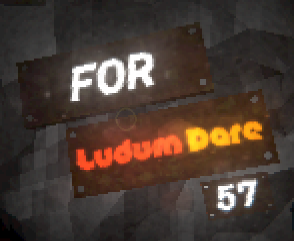
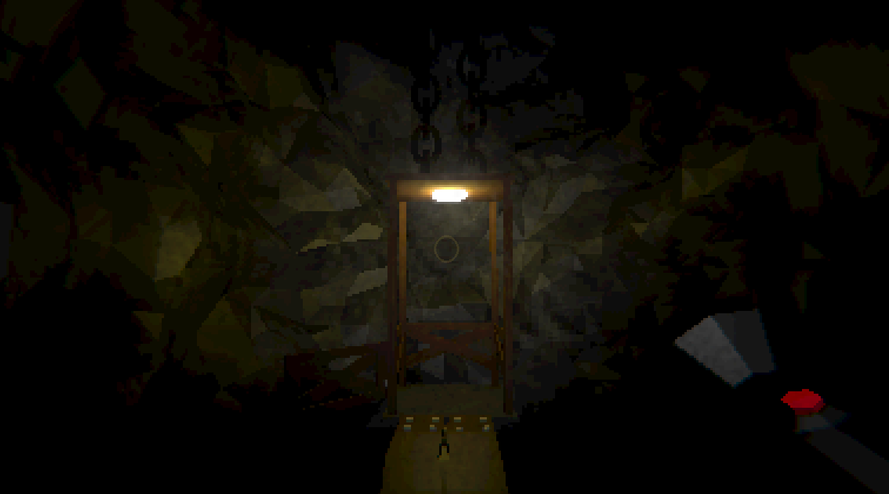